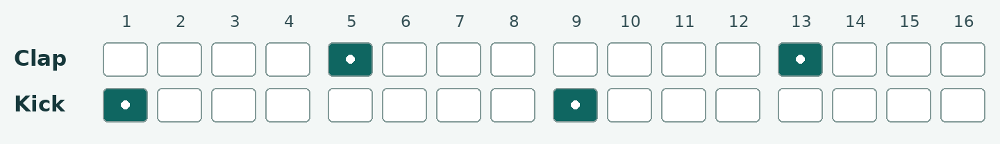

Einen eigenen Beat bauen
Sie brauchen Ihren Laptop und Kopfhörer. Am Schluss spielen Sie jemandem Ihren Beat vor.
Musik kombinieren
«Erste Schritte» öffnen ↗- Scrollen Sie zu den farbigen Feldern. Klicken Sie ein Feld bei Drums an und hören Sie kurz zu.
- Schalten Sie ein Feld bei Bass und eines bei Melodien dazu. Probieren Sie zwei verschiedene Kombinationen aus.
- Schalten Sie den Bass aus und wieder ein. Was hören Sie besser, wenn der Bass fehlt?
Das Schlagzeugraster erkunden
«Beats machen» öffnen ↗- Starten Sie das Beispiel mit dem Dreieck. Die Markierung läuft von links nach rechts. Jede Zeile steht für einen Klang.
- Klicken Sie in der Zeile Kick auf ein leeres Feld. Hören Sie den zusätzlichen tiefen Schlag? Klicken Sie nochmals auf dasselbe Feld, um ihn zu entfernen.
- Probieren Sie das mit Clap. Der Klang erinnert an Händeklatschen. Setzen und entfernen Sie einige Schläge, bis Sie beide Klänge gut unterscheiden können. Stoppen Sie das Beispiel.
Zum Nachhören: Was sind diese Klänge?
Ein Beat für Ihre Szene
«Mit Beats spielen» öffnen ↗- Wählen Sie eine Szene und behalten Sie sie vorerst für sich: Bahnhof spätabends, Einlauf vor einem YB-Match oder zu spät zum Bus.
- Bauen Sie im Raster einen Beat mit mindestens zwei Klängen. Hören Sie ihn zweimal durch.
- Verändern Sie eine Stelle: Fügen Sie Schläge hinzu oder lassen Sie eine Pause. Welche Version passt besser zu Ihrer Szene? Lassen Sie diese Version für die Hörprobe geöffnet.
Starthilfe für die ersten Schläge
Zählen Sie die Felder von links. Setzen Sie Kick auf Feld 1 und 9, Clap auf 5 und 13. Die Punkte zeigen die aktiven Felder. Verändern Sie danach das Muster für Ihre Szene.

Welche Szene hören Sie?
- Spielen Sie Ihren Beat einer zweiten Person vor. Zur Wahl stehen Bahnhof spätabends, Einlauf vor einem YB-Match und zu spät zum Bus.
- Die andere Person rät und begründet: «Ich tippe auf …, weil ich … höre.» Lösen Sie auf und zeigen Sie eine Stelle im Raster, die Sie bewusst verändert haben.
- Wechseln Sie die Rollen. Beide Beats sollen einmal zu hören sein.
Stoppen Sie die Musik und arbeiten Sie an Ihrem bisherigen Projekt weiter. Weiter zu meinem Projekt →
Die Ableton-Seiten öffnen sich in einem neuen Tab. Wechseln Sie für den nächsten Auftrag hierher zurück.
Vor der Lektion
Arbeitsauftrag digital bereitstellen oder das Arbeitsblatt ausdrucken. Kopfhörer und Ton am Beamer prüfen. Für die Übungen brauchen die Lernenden Internet. Die beiden Hörbeispiele sind in der HTML-Datei enthalten.
Zwei Beats zum Einsteigen
Beide Beispiele einmal abspielen. Die Klasse hört mit derselben Frage zu: «Welcher Beat hat mehr Pausen? Woran hören Sie das?»
Auflösung für die Besprechung
Beide Beats laufen mit 96 Schlägen pro Minute. In B füllt ein zusätzliches Becken, die Hi-Hat, die Lücken. B wirkt dadurch dichter. Im Grundtempo kann die Klasse zu beiden gleich schnell mitwippen.
Ablauf für 30 Minuten
| 0–6 Min. | Erste Schritte. Maximal 2 Minuten für die Hörbeispiele. Danach einzeln bei Ableton die Felder für Drums, Bass und Melodien kombinieren. |
| 6–13 Min. | Beats machen. Einen zusätzlichen Kick im Beispiel setzen, hören und entfernen. Anschliessend mit Clap vergleichen. |
| 13–25 Min. | Mit Beats spielen. Jede Person baut einen Beat für eine der drei Szenen. Bei Bedarf die Starthilfe mit den 16 Feldern zeigen. |
| 25–30 Min. | Hörprobe zu zweit. Beide spielen vor und begründen ihren Tipp. Danach wechseln alle zurück ins laufende Projekt. |
Worauf du beim Zuhören achten kannst
Hört man zwei unterschiedliche Klänge? Kann die Person im Raster zeigen, wo sie etwas verändert hat und was man dort hört? Die Szenen dürfen unterschiedlich gedeutet werden.
Wenn der Ton fehlt: Wiedergabe auf der Webseite starten und den Kopfhörer als Tonausgabe kontrollieren. Bei einem Netzausfall das Raster vom Arbeitsblatt nutzen: Eine Person klopft die Kick, eine zweite klatscht die Clap.